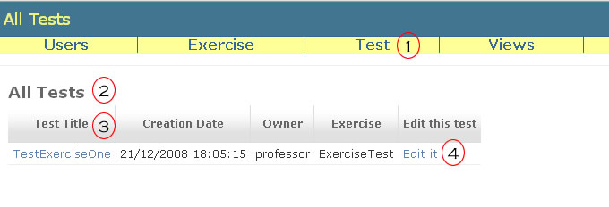

List Tests
It is possible see all tests registered in the system by the URL http://dataccc.gmf.ufcg.edu.br/hoopaloo/tests or by Test> List Tests menu option (1).

In table (2) is possible to see the name of tests, the creation date, the owner, the associated exercise and to access the edition page (4). Each line is a different test.
Cliking at the name of test you will be redirect to a page of test details (3). In this page you can see the code of test and will can edit or annul this test (See Edit a Test and Annul a Test).
Only the teacher and the assistants can see the details of tests.